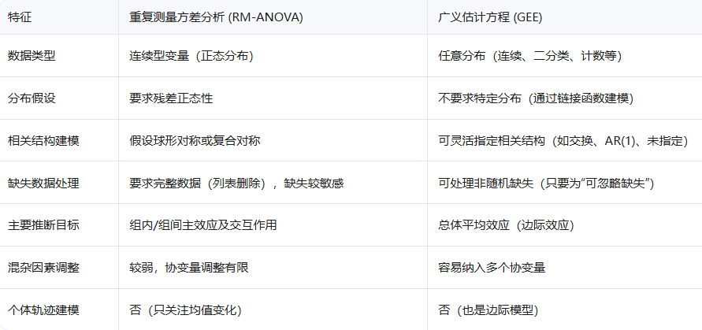
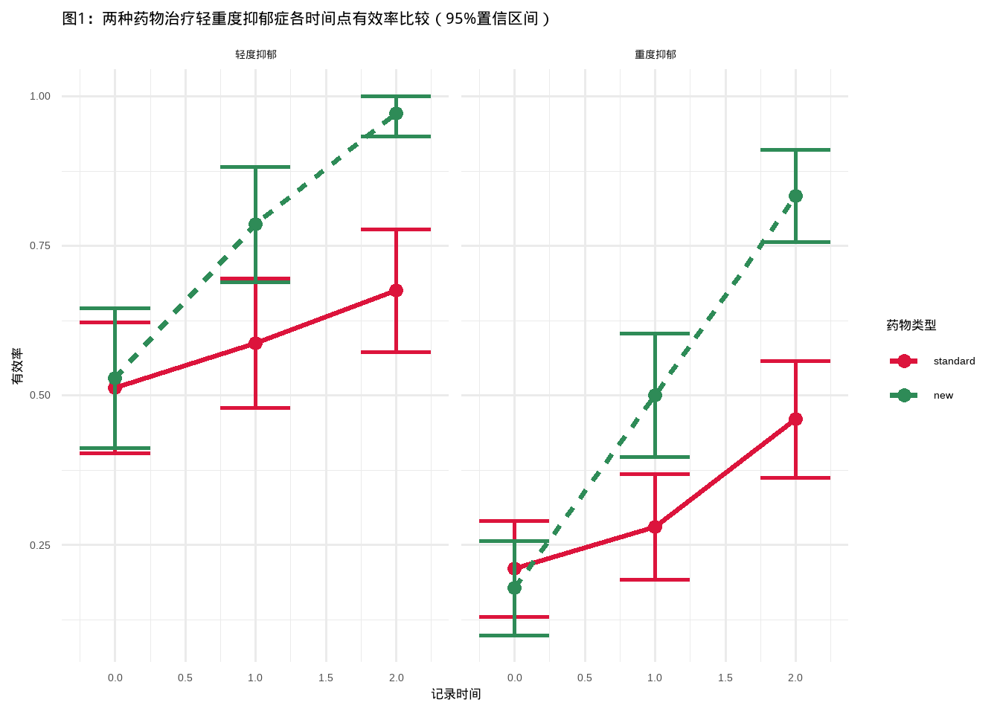

dat <- read.csv("datasets/depression.csv",stringsAsFactors = TRUE)
dat$id <- factor(dat$id)
dat$drug <- relevel(dat$drug, ref = "standard")
head(dat, n = 3)
## diagnose drug id time depression
## 1 mild standard 1 0 1
## 2 mild standard 1 1 1
## 3 mild standard 1 2 136 广义估计方程
36.1 理论知识
在医学研究中，我们经常需要对同一群患者在不同时间点进行多次测量，这种数据叫做重复测量数据，这也是最常见的纵向数据之一。
常见的纵向数据分析方法包括：
重复测量方差分析的使用前提太多了，比如，它要求因变量是符合正态分布的连续型变量、要求残差正态性、要求符合球对称假设、不能有缺失值等，而且对于混杂因素的调整较弱。
很多时候我们的数据并不能满足这么多的要求，此时可以使用广义估计方程（generalized estimating equations，GEE）。GEE和重复测量方差分析的区别如下：

广义估计方程的计算过程很复杂，但思想却并不难理解。该方法假定在多次测量之间存在一定的相关结构（广义估计方程中叫做作业相关矩阵）。对于重复测量数据而言，最主要的问题就是存在各次测量之间的相关性，从而不能用常规的线性模型等方法。所以广义估计方程思想很简单，就是把这种相关进行校正一下，然后得到校正后的参数估计值，这样就比较可靠了。–摘自冯国双老师的小白学统计
关于广义估计方程的理论知识，大家可以参考以下几篇文章，写得非常通俗，我都可以看懂，相信你们更加没问题：
重复测量数据分析及结果详解（之二）——广义估计方程 广义估计方程的结果，你真的会解释吗？ 如何分析临床纵向数据：研究目的及分析方法
下面是一个R语言实战广义估计方程的实例。
36.2 数据探索
我们通过一个具体的例子来学习GEE的使用方法。比较两种药物治疗治疗抑郁症的效果。
本研究包含340名受试者，主要变量包括：
diagnose：抑郁症严重程度，轻微(mild)和严重(severe)drug：药物，新药(new)和标准药(standard)id：受试者编号time：时间点（0，1，2）depression：结果变量，用药后的反应，1=有效，0=无效
下面探索下抑郁症有效（depression=1）的比例在不同的诊断和不同的药物类别中，随时间变化的情况。
with(dat,
tapply(depression, list(diagnose, drug, time), mean)) |>
ftable() |>
round(2)
## 0 1 2
##
## mild standard 0.51 0.59 0.68
## new 0.53 0.79 0.97
## severe standard 0.21 0.28 0.46
## new 0.18 0.50 0.83从结果中可以看出，“有效”的比例在所有四种诊断和治疗组合中都是随时间增加的，并且对于“新”药物的增加更为显著。
直接看数字可能不明显，下面我们画图展示。
library(ggplot2)
library(dplyr)
library(tidyr)
# 先计算下画图数据，前半段代码和上面的代码一个意思
summary_dat <- dat %>%
group_by(diagnose, drug, time) %>%
summarise(n = n(),
normal = sum(depression),
normal_rate = mean(depression),
.groups = "drop"
) %>%
mutate(se = sqrt(normal_rate * (1-normal_rate) / n),
lower = pmax(0, normal_rate - 1.96 * se),
upper = pmin(1, normal_rate + 1.96 * se)
)
## 画图
ggplot(summary_dat, aes(time, normal_rate, color=drug))+
geom_line(linewidth=1.3,aes(linetype = drug))+
geom_point(size=3)+
geom_errorbar(aes(ymin=lower, ymax = upper),width=0.5,size=0.9)+
facet_wrap(vars(diagnose),
labeller = labeller(diagnose=c(mild="轻度抑郁",severe="重度抑郁"))
)+
labs(
title = "图1：两种药物治疗轻重度抑郁症各时间点有效率比较（95%置信区间）",
x = "记录时间",
y = "有效率",
color = "药物类型",
linetype = "药物类型"
) +
theme_minimal(base_size = 13) +
scale_color_manual(values = c("new" = "#2E8B57", "standard" = "#DC143C"))
## Warning: Using `size` aesthetic for lines was deprecated in ggplot2 3.4.0.
## ℹ Please use `linewidth` instead.
直接看图就很直观了，从图中可以看出，不管是轻度抑郁还是重度抑郁，在用药后有效率都是随时间明显增加的，而且都是新药组增加的更加明显。
这个数据的因变量是二分类的，而且包含多个自变量，是没法用重复测量方差分析的，下面我们用广义估计方程探索两种药物治疗抑郁症的效果。
36.3 建立GEE
我们用geepack实现GEE，其他R包比如gee、glmtoolbox都可以用，用法都差不多。
从上面的的图中可以看出，两种药物治疗有效率随时间变化明显不同，这提示我们药物和时间之间是有交互作用的，所以需要在模型中加入交互项。
如果时间点是等距且你想建模线性趋势，用time；如果时间点不规则或你想捕捉非线性变化，用factor(time)。
library(geepack)
dep_gee <- geeglm(depression ~ diagnose + drug*time,
data = dat,
id = id,
family = binomial, # 因变量分布类型；连续变量选高斯分布
corstr = "independence") # 指定作业相关矩阵上面这个公式中比较难理解的是作业相关矩阵，主要有5种(以下内容参考重复测量数据分析及结果详解（之二）——广义估计方程)：
- 独立结构(independence structure):即不同时间点上的测量值之间彼此独立，无相关关系。这种结构因为数据完全独立，实际上也无需考虑广义估计方程，直接采用常规的广义线性模型即可。
- 等相关结构(exchangeable correlation structure):即假定任意两次观测之间的相关性是相等的，不随两个时间点之间的间隔大小而改变。不管是第1次观测与第2次观测，还是第3次观测与第5次观测，相关系数都相等。
- 一阶相关结构(one‐dependent structure)：表示某时间点的测量值只与其临近时间点的观测存在相关性，而与其他时间点的观测无关。例如，第2次观测只与第1次和第3次有相关，而与第4次无关。
- 自相关(autocorrelation)：即相关大小与间隔次数有 关，相邻两次观测之间相关较强，间隔越远，相关性越小。例如，第2次观测与第1次和第3次观测相关性较大，与第4次观测的相关性较小。
- 无结构相关(unstructured correlation)：即假定不同时间点观测值的相关系数各不相等，不存在前面几种相关结构的规律。
如何选择合适的作业相关矩阵？请参考重复测量数据分析及结果详解（之二）——广义估计方程
36.4 结果解读
查看详细的模型结果：
summary(dep_gee)
##
## Call:
## geeglm(formula = depression ~ diagnose + drug * time, family = binomial,
## data = dat, id = id, corstr = "independence")
##
## Coefficients:
## Estimate Std.err Wald Pr(>|W|)
## (Intercept) -0.02799 0.17419 0.026 0.872
## diagnosesevere -1.31391 0.14598 81.006 < 2e-16 ***
## drugnew -0.05960 0.22854 0.068 0.794
## time 0.48241 0.11994 16.179 5.76e-05 ***
## drugnew:time 1.01744 0.18769 29.385 5.93e-08 ***
## ---
## Signif. codes: 0 '***' 0.001 '**' 0.01 '*' 0.05 '.' 0.1 ' ' 1
##
## Correlation structure = independence
## Estimated Scale Parameters:
##
## Estimate Std.err
## (Intercept) 0.9806 0.06536
## Number of clusters: 340 Maximum cluster size: 3模型输出的系数是在logit(ln)尺度上的，我们可以像解释普通的逻辑回归一样来解释这些系数：
(Intercept)：系数是-0.028，表示在time=0、使用标准药的患者、治疗有效的log(odds)=-0.028。diagnosesevere：系数是-1.3139，那么OR值=exp(β)=exp(-1.3139)=0.27，说明在相同药物和相同随访时间下，重度抑郁患者的治疗有效率仅为轻度患者的27%。且差异具有统计学意义。这表明基线诊断越严重，治疗有效的可能性显著越低，是疗效的重要负向预测因子。drugnew：系数是-0.0596，OR=0.94，P=0.79，说明在治疗开始时（time=0），新药组与标准药组的治疗有效 率无统计学差异，说明两组基线均衡，后续疗效差异不太可能由初始不平衡导致。time：系数是0.48，那么OR值=exp(β)=exp(0.48)=1.62，说明使用标准药物时，每增加一个时间单位，有效率增加约62%。drugnew:time：系数是1.02，OR=2.77，说明在整个人群平均水平上，新药组随时间改善的速度是标准药组的2.77倍，这意味着新药的疗效优势随治疗时间延长而不断扩大。比如，在time=2时，新药组的有效率是标准药组的exp(-0.0596+1.0174*2)=7.21倍！
OR值和可信区间可直接通过代码得到：
broom::tidy(dep_gee,exponentiate = T,conf.int = T)
## # A tibble: 5 × 7
## term estimate std.error statistic p.value conf.low conf.high
## <chr> <dbl> <dbl> <dbl> <dbl> <dbl> <dbl>
## 1 (Intercept) 0.972 0.174 0.0258 0.872 0.691 1.37
## 2 diagnosesevere 0.269 0.146 81.0 0 0.202 0.358
## 3 drugnew 0.942 0.229 0.0680 0.794 0.602 1.47
## 4 time 1.62 0.120 16.2 0.0000576 1.28 2.05
## 5 drugnew:time 2.77 0.188 29.4 0.0000000593 1.91 4.00结论：在调整诊断严重程度后，新药与时间存在显著的交互作用（OR = 2.77, 95% CI: 1.92–3.97, p < 0.001），表明其抗抑郁疗效随治疗时间显著增强。尽管基线疗效无差异（OR = 0.94, p = 0.79），但在随访第2个时间点，新药组治疗有效率达到标准药组的7.2倍（OR = 7.21）。同时，重度诊断患者整体疗效较差（OR = 0.27, p < 0.001）。结果支持新药在中长期治疗中的优越性。
36.5 计算QIC
QIC可以帮助选择作业相关矩阵，QIC越小越好。下面我们尝试下不同的作业相关矩阵，并计算QIC。
library(geepack)
corstrs <- c("independence","exchangeable","ar1","unstructured")
qics=list()
for(i in 1:length(corstrs)){
dep_gee1 <- geeglm(depression ~ diagnose + drug*time,
data = dat, id = id, family = binomial,
corstr = corstrs[i])
qics[[i]]=QIC(dep_gee1)
}
do.call(rbind,qics)
## QIC QICu Quasi Lik CIC params QICC
## [1,] 1172 1172 -581 5.140 5 1172
## [2,] 1172 1172 -581 5.139 5 1172
## [3,] 1172 1172 -581 5.139 5 1172
## [4,] 1172 1172 -581 5.087 5 1173这个例子中QIC都是一样的~
36.6 边际效应
在广义估计方程中，边际效应（Marginal-Effect）通常指调整协变量后，干预或时间对结局的平均影响，其结果解释为人群平均水平（population-averaged），这正是 GEE 的核心优势（与混合效应模型的subject-specific 效应相比较）。
在上面的结果中，我们通过各个系数计算的OR值，就已经是边际OR值了。